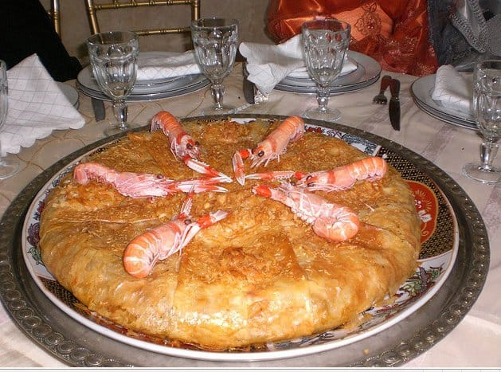

Les boulettes de viande hachée sont généralement cuites dans une sauce tomate parfumée aux épices comme le cumin, le paprika, le curcuma, et le gingembre. On peut également y ajouter des herbes fraîches comme le persil et la coriandre. Au centre, il semble y avoir un œuf poché ou cassé directement dans le tajine pour apporter une touche supplémentaire. Les rondelles de piment ou de poivron sur le dessus ajoutent une belle touche de décoration et de saveur..

Pastilla aux fruits de mer : une élégance culinaire marocaine
by
La pastilla aux fruits de mer est un plat emblématique de la gastronomie marocaine, souvent réservé aux grandes occasions. Composée de feuilles croustillantes farcies d'un mélange raffiné de fruits de mer et de vermicelles parfumés aux épices, elle est décorée avec des crevettes pour une présentation majestueuse. Une véritable harmonie entre douceur et saveurs salées.
tajine de poulet
by Alex Trost
Ce tajine savoureux combine du poulet tendre, mijoté dans une sauce parfumée au citron confit, aux olives vertes, et aux épices typiques comme le gingembre et le curcuma. Garni de tranches de citron frais et de coriandre, ce plat offre une explosion de saveurs acidulées et épicées, parfait pour une expérience culinaire authentique.